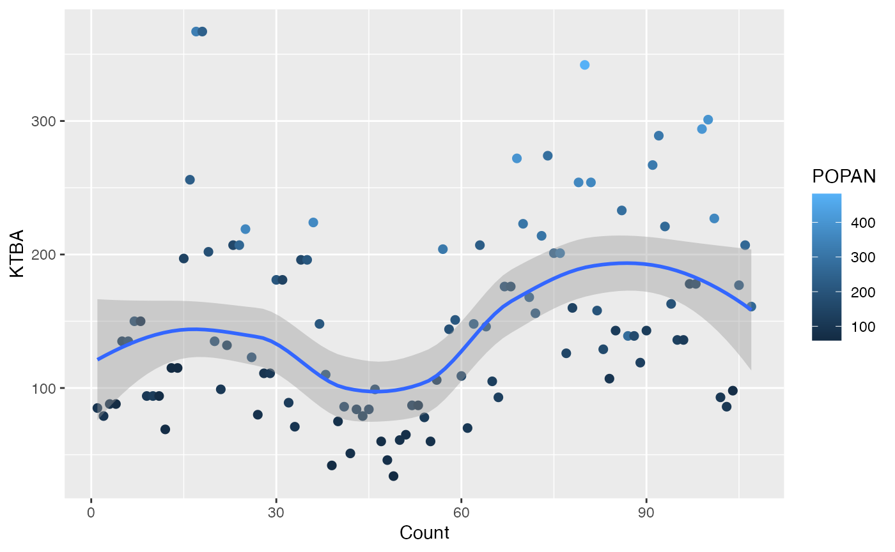
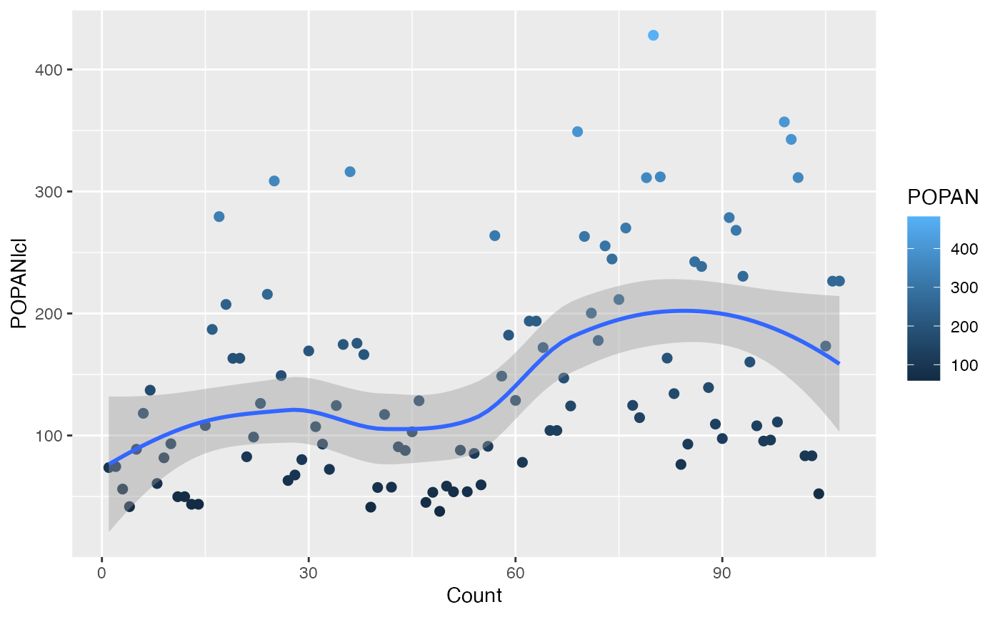
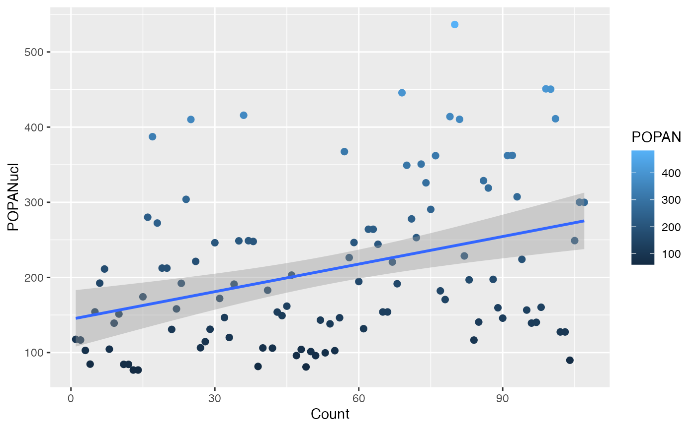
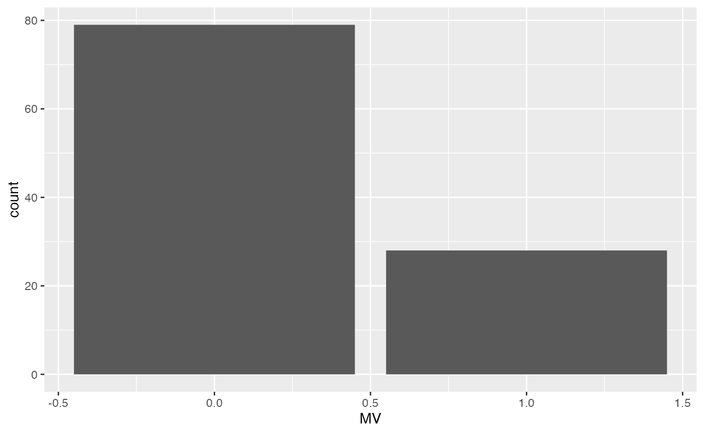
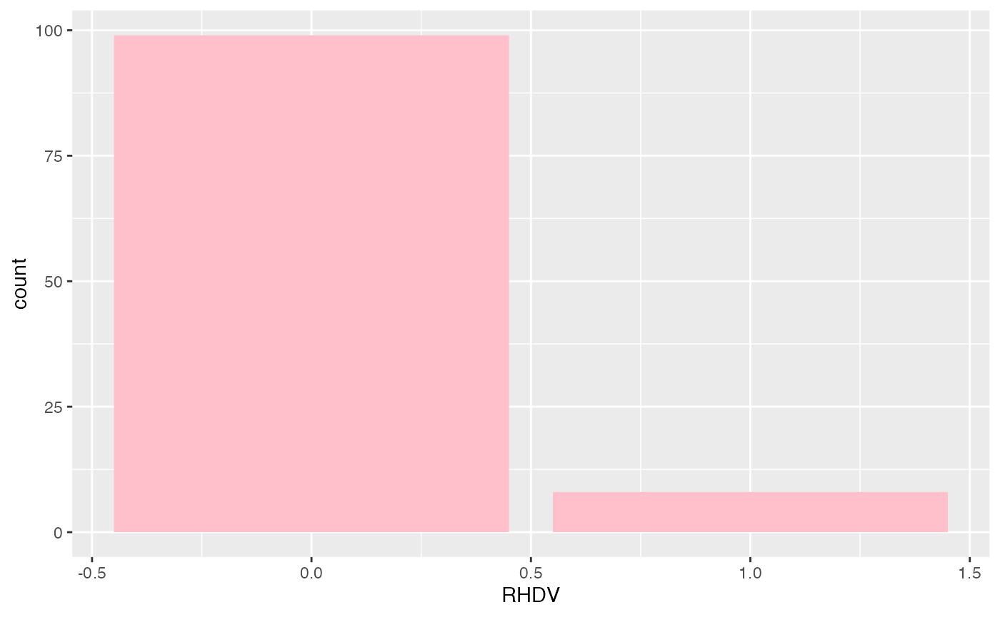
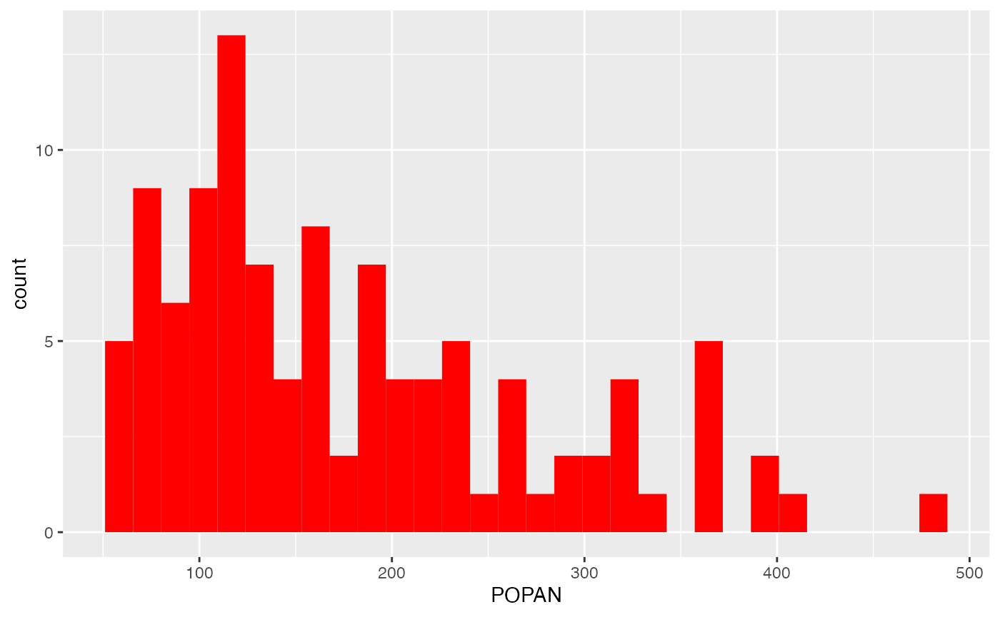
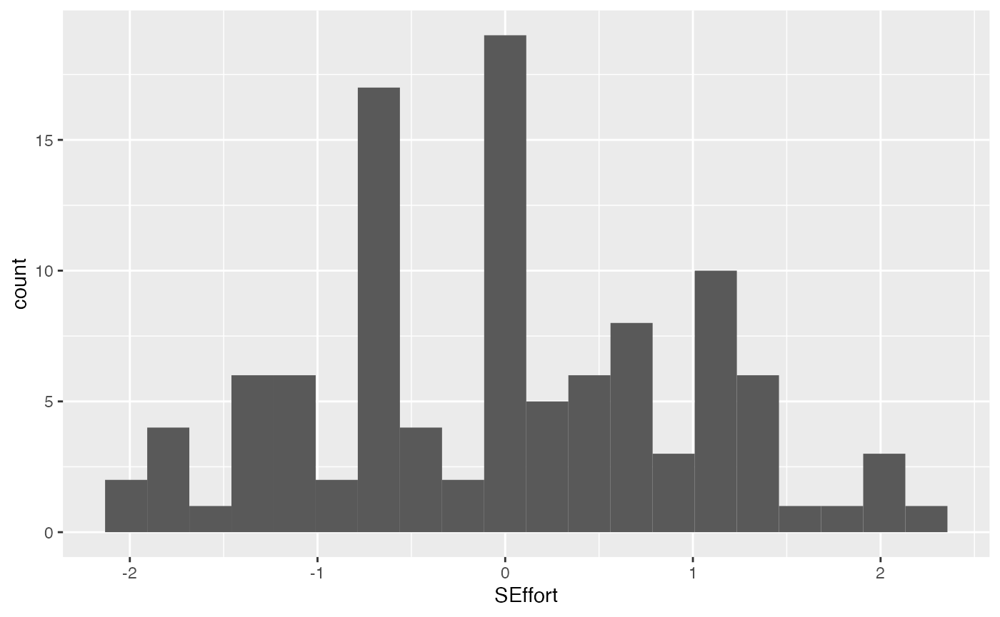
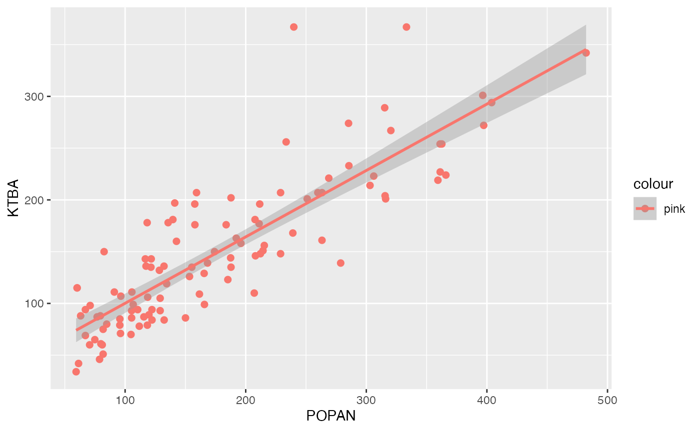
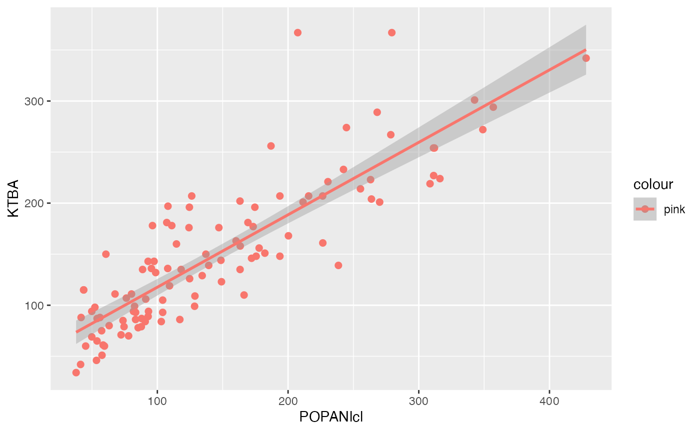

Oryctolagus Cuniculus
Anita Dhillon
2023-05-04
oryctolaguscuniculus.RmdOryctolagus Cuniculus
Background Info
Data Set Title: Previous exposure to myxomatos reduces survival of European Rabbits during Outbreak of Haemorrhagic disease
Author: Barnett,Louise
Publication Date: May 18,2019
Link to Data Set: https://datadryad.org/stash/dataset/doi:10.5061%2Fdryad.j91d66c
Article Title: Previous exposure to myxomatos reduces survival of European Rabbits during Outbreak of Haemorrhagic disease
Article Publication Date: May 26, 2018
Link to Article: https://besjournals.onlinelibrary.wiley.com/doi/10.1111/1365-2664.13187
Uploading the data set.
This is done with the read.csv() feature. If the file is not a csv file, this function will not work. The head() code shows the data compressed so when it is being knit, there are not multiple pages of data.
RabbitData <- read.csv("../data-raw/TripCovariates.csv")Renaming Data Set
To rename a data set or a set of values, the name that you want would be the first argument in the code and <- an arrow is used to determine which data set the name is being changed to.
RabbitD <- read.csv("../data-raw/TripCovariates.csv")Viewing the data set with condensed Values
When uploading a large data set, it can be seen that there will be multiple pages of the data when exported. To avoid this issue, we use the head() argument.
head(RabbitD)## tripnumber date RHDV MV Ints SEffort KTBA POPAN POPANlcl
## 1 1 28/01/1998 0 0 0.992 -1.10848440 85 95.66558 73.70802
## 2 2 30/03/1998 0 1 0.890 -0.43097568 79 95.61259 74.50899
## 3 3 26/05/1998 0 0 0.240 0.24653304 88 79.48626 56.09846
## 4 4 16/06/1998 0 0 0.548 -1.78015253 88 63.14022 41.66727
## 5 5 21/07/1998 0 0 0.154 -0.01045302 135 121.42046 88.70461
## 6 6 5/08/1998 0 0 0.616 -0.53610634 135 155.29448 118.18885
## POPANucl Sincefirsttrip
## 1 117.62314 0
## 2 116.71620 61
## 3 102.87406 118
## 4 84.61316 139
## 5 154.13632 174
## 6 192.40011 189Creating a data frame.
The argument c(), means to concatenate, it combines objects. In this argument, I created a data frame in which all 107 observations are included. A colon signifies a hypen in which all values are included.
Count <- c(1:107)Renaming a Column
Since we created a new set of values, it is important to add it into the data set so we can use it. The (\() in R studio signifies the columns and their names. When placed, it is important to include the data set title, the (\) ), the column you want to name and the data you are using to fill that column.
RabbitD$Count <- CountMaking GG Plot
A ggplot is used to create graphics based on the data. With this function it is important to include which data is being used, and the column names that will represent the x and y values.
The function geom_point(), is used to create scatter plots, which is useful to show the relationship between two continous variables.
The function geom_smooth(), creates a trend line in the data, also known as the best line of fit. This is helpful because it helps us visualize the graph and identify any outliers.
ggplot(data=RabbitD, mapping = aes(x= Count,y= KTBA, color = POPAN)) + geom_point(size=2) + geom_smooth()## `geom_smooth()` using method = 'loess' and formula = 'y ~ x'## Warning: The following aesthetics were dropped during statistical transformation: colour
## ℹ This can happen when ggplot fails to infer the correct grouping structure in
## the data.
## ℹ Did you forget to specify a `group` aesthetic or to convert a numerical
## variable into a factor?
In this plot it can be seen that the total amount of rabbits (KTBA) and the population (POPAN) as a whole, decreases for a while when the virus is introduced but remains constant. The trend line shows a decrease at the beginning, but rises as the count increases.
Here I created another plot with the data, changing the y value to identify any trends within my data.
ggplot(data=RabbitD, mapping = aes(x= Count ,y=POPANlcl , color = POPAN)) + geom_point(size=2) + geom_smooth()## `geom_smooth()` using method = 'loess' and formula = 'y ~ x'## Warning: The following aesthetics were dropped during statistical transformation: colour
## ℹ This can happen when ggplot fails to infer the correct grouping structure in
## the data.
## ℹ Did you forget to specify a `group` aesthetic or to convert a numerical
## variable into a factor?
This plot shows how the population (POPAN) changes when there is a population with immunity (POPANlcl). It was seen that the population rises when there is immunity to the virus.
Making a trend Line
Using the geom_smooth() function, I can make a trend line in my ggplot. In the previous graphs it was seen that there was a trend line that is not straight. The function “method=”lm”, adds a smooth line on the plot which is linear.
ggplot(data=RabbitD, mapping = aes(x= Count ,y=POPANucl , color = POPAN)) + geom_point(size=2) + geom_smooth(method="lm")## `geom_smooth()` using formula = 'y ~ x'## Warning: The following aesthetics were dropped during statistical transformation: colour
## ℹ This can happen when ggplot fails to infer the correct grouping structure in
## the data.
## ℹ Did you forget to specify a `group` aesthetic or to convert a numerical
## variable into a factor?
In this plot, the line is linear which shows an increase in population as immunity increases.
Creating a Bar Plot
To create a bar plot in R studio, we use the function geom_bar(). When creating this argument, it is important to once again list where the dats is being derived from as well as the x or y values as needed.

When creating this histogram, there was a significant change that I noticed. The myxoma virus (MV) is seen to decrease the population. There is an effect on the population of rabbits.
Adding color to a plot
To add color to a plot, we use the function “fill” or “color” depending on the type of function we are using.

In this graph it can be seen that in comparison to the MV (myxomatosis virus), the RHDV (Rabbit Hemorrhagic Disease) reduces the population more significantly. The study also concludes that the RHDV virus had a greater impact on the population.
Creating a Histogram
To create a histogram in R, we use the function geom_histogram(). This is a part of the ggplot package. With this argument, I made sure to include the function fill, which added color to my plot.
ggplot(RabbitD, aes(x = POPAN ))+
geom_histogram(fill = "red")## `stat_bin()` using `bins = 30`. Pick better value with `binwidth`.
The graph shows that there was an significant increase in the population at the start, which started to decrease when the virus was introduced. Towards the left side of the graph, it can be seen that there was an extreme decline but rises.
Bins with geom_histogram
The bins argument defines the number of bins and the width of the bins in the histogram.
ggplot(RabbitD,aes(x = SEffort, color= POPAN))+
geom_histogram(bins=20)## Warning: The following aesthetics were dropped during statistical transformation: colour
## ℹ This can happen when ggplot fails to infer the correct grouping structure in
## the data.
## ℹ Did you forget to specify a `group` aesthetic or to convert a numerical
## variable into a factor?
Saving plots as Image Files
Using the function gg save() file name= is included as the main argument and it indicates the path where the image is saved. With this code , I saved my graph into my R project.
ggsave("DiseaseD_by_Popan.jpg")## Saving 7.29 x 4.51 in image## Warning: The following aesthetics were dropped during statistical transformation: colour
## ℹ This can happen when ggplot fails to infer the correct grouping structure in
## the data.
## ℹ Did you forget to specify a `group` aesthetic or to convert a numerical
## variable into a factor?Changing the size of the image
When using the ggsave() function, the height and width of the image can be altered. Placing a value in front of these functions will change the size of the image in inches.
ggsave("DiseaseD_by_POPAN.pdf",height =5, width =5 )## Warning: The following aesthetics were dropped during statistical transformation: colour
## ℹ This can happen when ggplot fails to infer the correct grouping structure in
## the data.
## ℹ Did you forget to specify a `group` aesthetic or to convert a numerical
## variable into a factor?Filtering Data
Using the filter function I can get all of the rows in the data frame for a certain species. I can create a separate data frame with the variables/columns I want to work with. In this case, I choose to create two different data frames which included the virus, the date and the population so I can identify the effect of the each virus on the population.
RHDV <- select(RabbitD,date,KTBA, POPAN, RHDV)
colnames(RHDV)## [1] "date" "KTBA" "POPAN" "RHDV"
ggplot(data=RHDV, mapping = aes(x= POPAN,y= KTBA, color = "pink")) + geom_point(size=2) + geom_smooth(method= "lm")## `geom_smooth()` using formula = 'y ~ x'
With the data frame I created, it was seen that there was a large decrease in the population with infection rate at the beginning of the experiment when the virus was introduced and gradually resumes to increase. This shows that the rabbits may have developed immunity for the virus.
MV <- select(RabbitD, date, KTBA, POPANlcl, MV)
colnames(MV)## [1] "date" "KTBA" "POPANlcl" "MV"
ggplot(data=MV, mapping = aes(x= POPANlcl,y= KTBA, color = "pink")) + geom_point(size=2) + geom_smooth(method= "lm")## `geom_smooth()` using formula = 'y ~ x'
Creating a Phylogentic Tree
species_b <- c("Oryctalagus cuniculus cuniculus", "Oryctalagus cuniculus alrigus", "Leporidae", "Sylvilagus", "Pronolagus", "Lepus", "Romerolagus")
b_spec <- tnrs_match_names(species_b)
b_tre <- tol_induced_subtree(ott_ids = b_spec$ott_id)##
Progress [-----------------------------------] 0/1 ( 0) ?s
Progress [==================================] 1/1 (100) 0s
## Warning in collapse_singles(tr, show_progress): Dropping singleton nodes with
## labels: Oryctolagus ott864605
plot(b_tre)
RabbitTree <- read.tree("../data-raw/subtree-node-ott644258-Leporidae.tre" )
plot(RabbitTree)
par(cex.sub=2)
plot.phylo(RabbitTree)